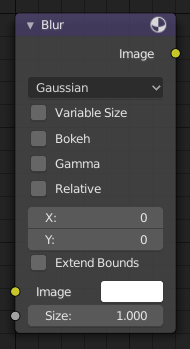

Blur Node¶

Blur Node.
The Blur node blurs an image, providing several blur modes.
Inputs¶
- Image
- Standard image input.
- Size
- The optional Size input will be multiplied with the X and Y blur radius values. It accepts also a value image, to control the blur radius with a mask. The values should be mapped between (0 to 1) for an optimal effect.
Properties¶
- Type
The difference between the types is in the way they handle sharp edges, smooth gradients and preserve the highs and the lows.
- Flat
- Simply blurs everything uniformly.
- Tent
- Preserves the high and the lows better by making a linear falloff.
- Quadratic
- Looks similar to Gaussian but can be a little faster but slightly worse looking.
- Cubic
- Preserve the highs, but give an almost out-of-focus blur while smoothing sharp edges.
- Gaussian
- Gives the best looking results but tends to be the slowest.
- Fast Gaussian
- An approximation of the Gaussian.
- Catmull-Rom
- Catmull-Rom keeps sharp contrast edges crisp.
- Mitch
- Preserve the highs, but give an almost out-of-focus blur while smoothing sharp edges.
- Variable Size
Allows a variable blur radius, if the size input is an image.
- Bokeh
- The Bokeh button will force the blur node to use a circular blur filter. This gives higher quality results, but is slower than using a normal filter.
- Gamma
- The Gamma button applies a gamma correction on the image before blurring it.
- Relative
Percentage Value of the blur radius relative to the image size.
- Aspect Correction
- None, Y, X
- X, Y
- Values set the ellipsoid radius in numbers of pixels over which to spread the blur effect.
- Extend Bounds
- Allows the image, that is being blurred, to extend past its original dimension.
Outputs¶
- Image
- Standard image output.